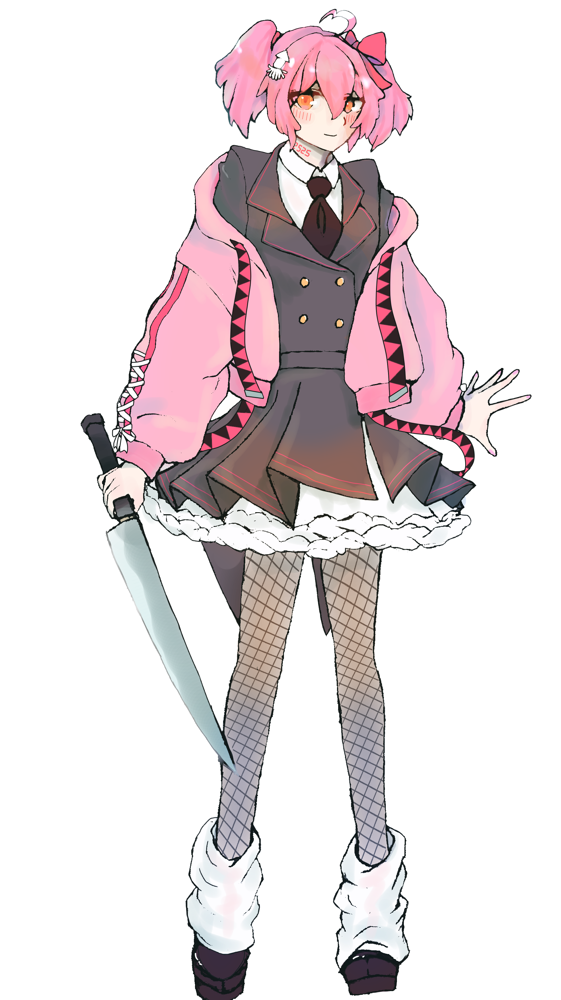

- 名前
- 殺音 マドカ(さいね まどか)
- 年齢
- 23
- 性格
- ヤンデレ
- キャラデザイン
- ピンク髪、短いツインテ、アホ毛、赤いほっぺ、オレンジのジト目、首にボーカロイドナンバー(2525)
- 服装
- 薄ピンクのタキシードとパーカーの合体、黒ネクタイ、黒い網タイツ、学生靴
- 持ち物
- 大きいナイフ
- ボーカロイドナンバー
- 2525（ニコニコ復活で作られたから）
- 好きな食べ物
- 燻製さきいかと酒
- 身長
- 169cm
- 体重
- 51kg
- 誕生日
- 4月21日（由来
- 性別
- 男の娘
- 種族
- 幽霊
- 声質
- 吐息多めかすれカワボ
- キャッチコピー
- あなたの心に突き刺さる(ナイフ)
- 口癖
- 「ころしにいくね」
- キメ台詞
- 「瞬殺だね、ハハ」「殺ったね」
- 1人称
- マドカ
- 趣味
- ナイフ研ぎ
- 得意なこと
- 歌詞クイズ、死んだふり
- 好きな物
- ニコニコ
- 苦手な物
- サイバー攻撃
- 苦手なこと
- 禁酒
- 嫌いな動物
- ネズミ
- 嫌いな人
- すぐ瞬殺する人
- 住所
- グンマー帝国
- ファンやリスナーへの呼び方
- ダーリン
- 立ち絵
- https://d.kuku.lu/ypu8rbk7j
- 立ち絵制作者
- 円井舜（つぶらいしゅん）
- CV
- りかりにこ